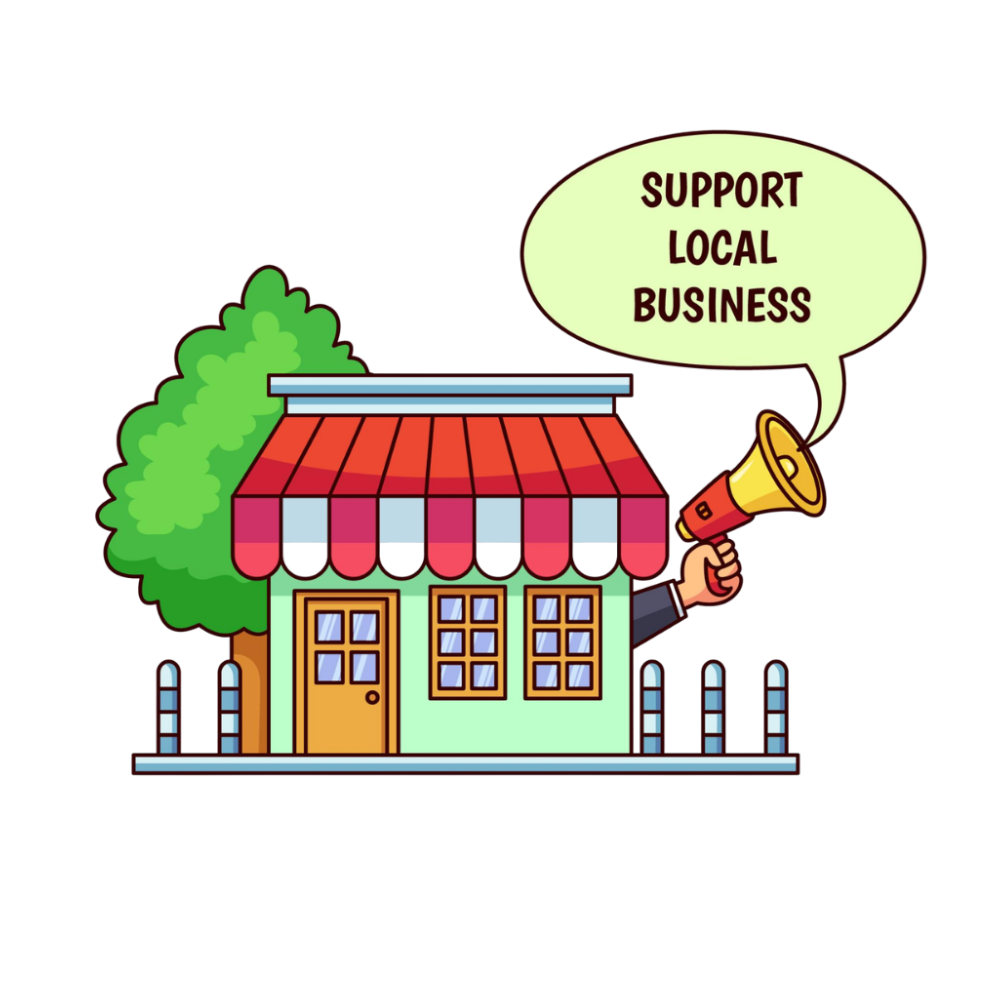

Tiendas de barrio
Una presencia online clara para que más gente descubra el negocio.
Web para tiendas
Si tienes una tienda física o un pequeño comercio, una web bien planteada puede ayudarte a mostrar productos, explicar lo que vendes, reforzar tu imagen y facilitar que más gente te visite o te escriba.
Una presencia online clara para que más gente descubra el negocio.
Imagen cuidada, productos destacados y botones de contacto visibles.
Web visual para enseñar catálogo, ubicación y horarios.

La clave es enseñar bien lo que vendes y hacer muy fácil que te encuentren o te pregunten.
Una página para explicar tu tienda, tu estilo, tu propuesta y por qué merece la pena visitarte.
Bloques o secciones para mostrar categorías, novedades o productos más llamativos.
Para que cualquier persona sepa rápido dónde estás, cuándo abres y cómo consultarte.
No porque sustituya a la tienda física, sino porque la acompaña y la hace más visible.
Te encuentran mejor que si dependes solo de Instagram o del boca a boca.
Una web ordenada hace que el negocio se perciba más profesional y cuidado.
WhatsApp, email o formularios bien visibles ayudan a convertir visitas en contactos.
Horarios, ubicación y lo que vendes explicado de forma fácil y rápida.
Me cuentas qué tipo de tienda tienes, qué vendes y qué objetivo debe cumplir la web.
Organizo la información para que el visitante entienda rápido lo importante.
Preparo una propuesta visual y la ajustamos contigo antes de publicar.
Tu tienda queda con una presencia online profesional, clara y fácil de compartir.
Muchas pequeñas tiendas no necesitan un ecommerce grande desde el principio. A veces basta con una web bien hecha que muestre productos, genere confianza y facilite el contacto.
Eso sí: la web tiene que estar bien resuelta en móvil, con una imagen limpia y con mensajes fáciles de entender.
Una mala web puede hacer que una tienda parezca menos cuidada de lo que realmente es. Una buena, en cambio, acompaña bien al negocio y lo hace más creíble.
Qué cuido especialmente
Contacto
Escríbeme y te digo cómo la enfocaría.